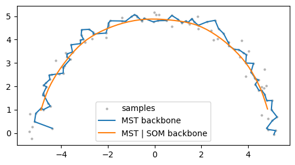

Refine an ordering with a self-organizing map#
This guide shows how to use SOMOrderer: chained
after another orderer, on its own, with outlier rejection, under jit, and as an
ensemble. The self-organizing map explains how the map is trained and projected.
Chain it after another orderer#
The SOM smooths an ordering it is handed, so it works best after another orderer. This is what the default pipeline does; chaining it yourself gives you control over both stages:
import jax.numpy as jnp
import phasecurvefit as pcf
ang = jnp.linspace(0.0, jnp.pi, 120)
pos = {"x": 5.0 * jnp.cos(ang), "y": 5.0 * jnp.sin(ang)}
vel = {"x": -jnp.sin(ang), "y": jnp.cos(ang)}
chain = pcf.orderers.MSTOrderer(k=8, jump_cap=3.0) | pcf.orderers.SOMOrderer(
n_prototypes=12
)
result = pcf.order(pos, vel, chain)
assert int(result.n_visited) == 120
On noisy data the MST’s backbone follows individual samples, while the SOM’s follows their average:
import jax
import matplotlib.pyplot as plt
k1, k2 = jax.random.split(jax.random.key(1))
noisy = {
"x": pos["x"] + 0.2 * jax.random.normal(k1, (120,)),
"y": pos["y"] + 0.2 * jax.random.normal(k2, (120,)),
}
mst = pcf.orderers.MSTOrderer(k=8, jump_cap=3.0)
fig, ax = plt.subplots(figsize=(6, 3.4))
ax.plot(noisy["x"], noisy["y"], ".", c="0.7", ms=4, label="samples")
for name, orderer in {"MST": mst, "MST | SOM": chain}.items():
backbone = pcf.order(noisy, vel, orderer).backbone
ax.plot(backbone["x"], backbone["y"], lw=1.5, label=f"{name} backbone")
ax.set(aspect="equal")
ax.legend();

Samples the earlier stage left unvisited stay unvisited, so if that stage cut the
curve short (an MST whose jump_cap cannot bridge a gap, say) the chain inherits the
cut. Check n_visited when chaining.
Run it on its own#
On its own, the SOM seeds its lattice by binning the samples along the first principal axis of the positions:
result = pcf.order(pos, vel, pcf.orderers.SOMOrderer(n_prototypes=12))
assert int(result.n_visited) == 120
This works only when the curve does not double back along that axis, which holds up
to about one turn. For a near-closed loop or a curve that winds further, chain the SOM
after an MSTOrderer instead. On its own the SOM’s
direction is arbitrary; set orient_by_velocity=True to make \(\gamma\) increase along
the mean velocity.
Read the along-track coordinate#
The SOM gives each sample a continuous arc length along its backbone, in input
order, as result.chord:
assert result.chord.shape == (120,)
Tune it#
n_prototypes: the number of lattice points. The setting that matters is the smoothing length along the curve,sigma_phys = sigma_end * L / (n_prototypes - 1), whereLis the track length. Bends tighter thansigma_phys, and arms closer together than it, are smoothed away. Raisen_prototypesuntilsigma_physis below the curve’s tightest turn and smallest gap between arms. A curve that crosses itself needs many: a six-lobed epitrochoid is ordered perfectly atn_prototypes=90and not at all at 25.sigma_start,sigma_end: the neighbourhood width in lattice units, shrunk geometrically during training.sigma_start=Noneusesmax(n_prototypes / 4, sigma_end)on its own, andsigma_endwhen chained, so a chained SOM refines locally.n_epochs: tens, not thousands; each epoch is one pass over all the data.densify_factor: backbone samples per lattice segment. It has little effect above about 2 and its cost grows linearly, so raise it only for a strongly curved track.orient_by_velocity: flips the result so \(\gamma\) increases along the mean velocity. It overrides a direction an earlier stage chose. DefaultFalse.metric,metric_scale: by default the SOM follows the previous stage. After an orderer that used velocity it uses a phase-space metric with a scale derived from the data, and otherwise it uses position alone. Set either to override. The metric must be symmetric, soAlignedMomentumDistanceMetricdoes not work here.
Options and defaults lists the defaults.
If the SOM’s ordering disagrees strongly with the one it was given, it warns. Either
the earlier ordering was poor, or the lattice is too coarse and has tangled a good
ordering. If the earlier stage was doing well, raise n_prototypes.
Reject outliers#
The SOM has no outlier rejection by default, and contamination pulls its backbone
off the curve while the ordering still looks good. Pass a
SOMMixture as outlier_mixture to model each sample as
drawn either from the curve or from a flat background:
k1, k2, k3 = jax.random.split(jax.random.key(2), 3)
bg = {
"x": jax.random.uniform(k1, (30,), minval=-5.0, maxval=5.0),
"y": jax.random.uniform(k2, (30,), minval=0.0, maxval=5.0),
}
mixed_pos = {k: jnp.concatenate([noisy[k], bg[k]]) for k in noisy}
mixed_vel = {k: jnp.concatenate([vel[k], jax.random.normal(k3, (30,))]) for k in vel}
som = pcf.orderers.SOMOrderer(n_prototypes=25, outlier_mixture=pcf.som.SOMMixture())
result = pcf.order(mixed_pos, mixed_vel, som)
print(int(result.n_skipped), "samples rejected")
24 samples rejected
A rejected sample gets -1 in indices and nan in chord, like a sample an
earlier stage left unvisited. On a half-circle arc of 300 samples with scatter 0.21
and uniform background mixed in, the backbone’s mean distance from the true arc was:
background samples |
SOM on its own |
with |
background rejected |
arc samples rejected |
|---|---|---|---|---|
0 |
0.028 |
0.034 |
- |
0 |
30 (9%) |
0.129 |
0.035 |
26 |
0 |
60 (17%) |
0.267 |
0.033 |
44 |
0 |
120 (29%) |
0.454 |
0.038 |
80 |
0 |
240 (44%) |
0.822 |
0.159 |
102 |
0 |
At 60 background samples, the 16 it kept all lie within 0.6 of the arc, under three times the arc’s scatter. At 240 the ones it kept reach 1.7 from the arc, which is where the larger error comes from. At 240 and 40 epochs it failed, keeping 237 of the 240, with a backbone error of 0.65.
The mixture works with weights: a weight counts a sample as that many copies, and
doesn’t change whether it is a member.
On a mask or an image whose samples fill their own bounding box, the background explains the samples better than the curve does, and the fit ends with most of them called background. A fit like that keeps every sample, so there the mixture does nothing (The self-organizing map).
The background density defaults to one over the area (or volume) of the positions’
bounding box. If the samples don’t fill the field, set background_inflate above 1
or give background_density directly, in your position units.
Chained after another orderer, the SOM keeps its neighbourhood narrow from the
start, so it can’t move a backbone that the earlier stage started in the background.
After MSTOrderer(edge_clip_sigma=3.0) on the arc above, the error with the mixture
was 0.085 at 60 background samples and 0.596 at 120. Passing
sigma_start=n_prototypes / 4 lets it re-form the lattice, and brought those to
0.037 and 0.045 (0.108 at 240):
chain = pcf.orderers.MSTOrderer(edge_clip_sigma=3.0) | pcf.orderers.SOMOrderer(
n_prototypes=25, sigma_start=25 / 4, outlier_mixture=pcf.som.SOMMixture()
)
result = pcf.order(mixed_pos, mixed_vel, chain)
Use it under jit#
On its own, the SOM can be traced:
t = jnp.linspace(0.0, 2.0, 60)
arc = {"x": jnp.cos(t), "y": jnp.sin(t)}
arc_vel = {"x": -jnp.sin(t), "y": jnp.cos(t)}
chord = jax.jit(
lambda q, p: pcf.order(q, p, pcf.orderers.SOMOrderer(n_prototypes=8)).chord
)(arc, arc_vel)
assert chord.shape == (60,)
Chained after another stage it can too, and so can the default pipeline. Samples the earlier stage left unvisited stay unvisited:
chain = pcf.orderers.MSTOrderer() | pcf.orderers.SOMOrderer(n_prototypes=8)
chord = jax.jit(lambda q, p: pcf.order(q, p, chain).chord)(arc, arc_vel)
assert chord.shape == (60,)
Build an ensemble#
To estimate the uncertainty of the backbone, resample the data. The functions in
phasecurvefit.som can be vmap-ed over a matrix of weights, one bootstrap
resample per member:
from phasecurvefit import som
t = jnp.linspace(0.0, 2.0, 300)
arc = {"x": jnp.cos(t) * 3, "y": jnp.sin(t) * 3}
arc_vel = {"x": -jnp.sin(t), "y": jnp.cos(t)}
metric = pcf.metrics.SpatialDistanceMetric()
proto_q, proto_p = som.init_prototypes(arc, arc_vel, n_prototypes=20)
keys = jax.random.split(jax.random.key(0), 8)
weights = jax.vmap(lambda k: som.bootstrap_weights(k, 300))(keys)
def member(w):
res = som.fit(proto_q, proto_p, arc, arc_vel, metric=metric, weights=w)
bq, bp = som.densify(res.prototype_positions, res.prototype_velocities, factor=5)
return som.chord(bq, bp, arc, arc_vel, metric=metric)
chords = jax.vmap(member)(weights)
assert chords.shape == (8, 300)
assert float(jnp.std(chords, axis=0).mean()) > 0
bootstrap_weights() draws N indices with replacement and
returns how often each sample came up. A weight is a multiplicity: zero means the
sample is absent, and k means it appears k times, so 0/1 weights give a
subsample.
Perturbing the initial lattice does not give an ensemble: the members converge to the same answer within a few epochs (The self-organizing map).